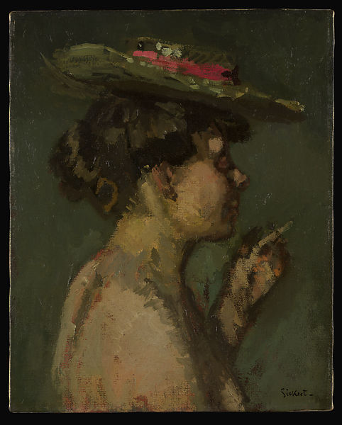

<head>
<meta charset="UTF-8" />
<meta name="keywords" content="drawing, painting" />
<meta name="description" content="drawings by Sunjy" />
<title>Sunjy</title>
<link rel="shortcut icon" type="image/x-icon" href="../../mImages/mCommon/favicon.ico" media="screen" />
<link rel="stylesheet" type="text/css" href="../../mCsses/mCommon/mCssA.css" />
<link rel="stylesheet" type="text/css" href="../../mCsses/mCommon/mCssB.css" />
<link rel="stylesheet" type="text/css" href="../../mCsses/mCommon/mCssC.css" />
<link rel="stylesheet" type="text/css" href="../../mCsses/mCommon/mCssD.css" />
<link rel="stylesheet" type="text/css" href="../../mCsses/mContent/mCssA.css" />
<link rel="stylesheet" type="text/css" href="../../mCsses/mContent/mCssB.css" />
<link rel="stylesheet" type="text/css" href="../../mCsses/mContent/mCssC.css" />
<link rel="stylesheet" type="text/css" href="../../mCsses/mContent/mCssD.css" />
</head>
<script type="text/javascript" src="../../mScripts/mContent/mContentAA.js" /></script>
<script type="text/javascript" src="../../mScripts/mContent/mContentAB.js" /></script>
<script type="text/javascript" src="../../mScripts/mContent/mContentAC.js" /></script>
<script type="text/javascript" src="../../mScripts/mContent/mContentAD.js" /></script>
<script type="text/javascript"></script> 
<script type="text/javascript">
document.write('<div class="mImgAbsolute"></div>');
/*
document.write('<p class="mFontSizeBColor" />From a white paper...</p>');
document.write('<table class="center"><tr><td>');
document.write('');
document.write('</td></tr></table>');
*/
</script>


<script type="text/javascript">
document.write('<p class="mFontSizeBColor" />The Cigarette (Jeanne Daurmont)</p>');
document.write('<p class="mFontSizeSColor" />By Walter Richard Sickert, 1906. This is one of a group of six pictures that Sickert painted of two Belgians, Jeanne and Hélène Daurmont, during the Easter holiday in 1906. Jeanne, a milliner, later recalled that she and her sister, a charwoman, had met the artist in London when he overheard them speaking to a policeman in French. The subdued palette, softly smudged outlines, and direct approach to the model anticipate the artist&#39;s later Camden Town style, for which he is best known.<br><br>At Easter time 1906 Sickert sent his friend Mrs. George Swinton several postcards with sketches of paintings he was working on. One of them depicts this picture and is inscribed: Easter Monday No.1. Jeanne (private collection).</p>');
document.write('<table class="center" /><tr><td>');
document.write('<br>At Easter time 1906 Sickert sent his friend Mrs. George Swinton several postcards with sketches of paintings he was working on. One of them depicts this picture and is inscribed: Easter Monday No.1. Jeanne (private collection)." />');
document.write('</td></tr></table>');
</script>


